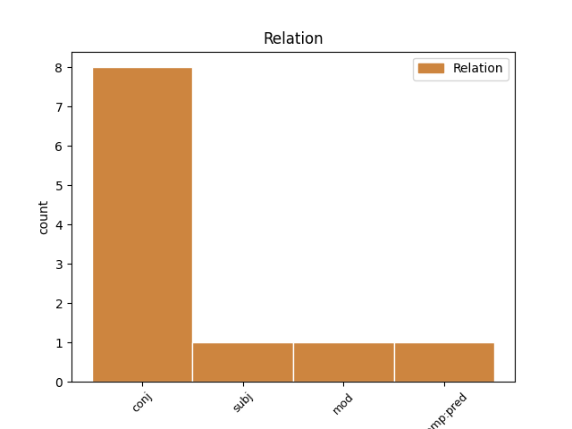
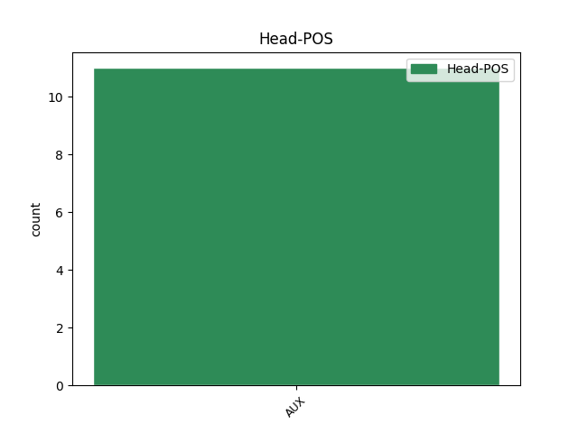
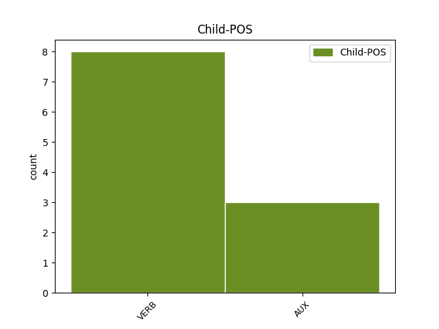

Distribution of features within this leaf



Agreement Rules sorted by frequency.
- When the dependent token is the conjunct(conj) of the head token, and the head token is AUX and the dependent token is AUX.
1 Yr _ _ _ _ 0 _ _ _
2 enw _ _ _ _ 0 _ _ _
3 brodorol _ _ _ _ 0 _ _ _
4 ar _ _ _ _ 0 _ _ _
5 yr _ _ _ _ 0 _ _ _
6 iaith _ _ _ _ 0 _ _ _
7 ydy is AUX _ Tense=Pres|VerbForm=Cop 0 _ _ _
8 Cymraeg _ _ _ _ 0 _ _ _
9 , _ _ _ _ 0 _ _ _
10 a'r _ _ _ _ 0 _ _ _
11 enw _ _ _ _ 0 _ _ _
12 brodorol _ _ _ _ 0 _ _ _
13 ar _ _ _ _ 0 _ _ _
14 y _ _ _ _ 0 _ _ _
15 wlad _ _ _ _ 0 _ _ _
16 ydy is AUX _ Tense=Pres|VerbForm=Cop 7 conj _ _
17 Cymru _ _ _ _ 0 _ _ _
18 ar _ _ _ _ 0 _ _ _
19 gyfer _ _ _ _ 0 _ _ _
20 " _ _ _ _ 0 _ _ _
21 Wales _ _ _ _ 0 _ _ _
22 . _ _ _ _ 0 _ _ _
23 " _ _ _ _ 0 _ _ _
1 Groser _ _ _ _ 0 _ _ _
2 oedd _ AUX _ Aspect=Imp|Mood=Ind|Number=Sing|Person=1|Tense=Past|VerbForm=Fin|Voice=Act 0 _ _ _
3 ei _ _ _ _ 0 _ _ _
4 dad _ _ _ _ 0 _ _ _
5 ac _ _ _ _ 0 _ _ _
6 roedd _ VERB _ Form=Ecl|Mood=Ind|Tense=Past 2 conj _ _
7 gan _ _ _ _ 0 _ _ _
8 Lloyd _ _ _ _ 0 _ _ _
9 - _ _ _ _ 0 _ _ _
10 Jones _ _ _ _ 0 _ _ _
11 ddau _ _ _ _ 0 _ _ _
12 frawd _ _ _ _ 0 _ _ _
13 . _ _ _ _ 0 _ _ _
1 Aled aled VERB _ Mood=Ind|Tense=Pres 16 subj _ _
2 Lewis _ _ _ _ 0 _ _ _
3 Evans _ _ _ _ 0 _ _ _
4 yn _ _ _ _ 0 _ _ _
5 siarad _ _ _ _ 0 _ _ _
6 â _ _ _ _ 0 _ _ _
7 Siân _ _ _ _ 0 _ _ _
8 Cothi _ _ _ _ 0 _ _ _
9 Bardd _ _ _ _ 0 _ _ _
10 ac _ _ _ _ 0 _ _ _
11 awdur _ _ _ _ 0 _ _ _
12 yn _ _ _ _ 0 _ _ _
13 Gymraeg _ _ _ _ 0 _ _ _
14 a _ _ _ _ 0 _ _ _
15 Saesneg _ _ _ _ 0 _ _ _
16 yw yw AUX _ Tense=Pres|VerbForm=Cop 0 _ _ _
17 Aled _ _ _ _ 0 _ _ _
18 Lewis _ _ _ _ 0 _ _ _
19 Evans _ _ _ _ 0 _ _ _
20 . _ _ _ _ 0 _ _ _
1 Bu is AUX _ Gender=Fem,Masc|HebBinyan=PAAL|Number=Plur|Person=3|Tense=Past|Voice=Act 0 _ _ _
2 farw _ _ _ _ 0 _ _ _
3 ar _ _ _ _ 0 _ _ _
4 8 _ _ _ _ 0 _ _ _
5 Hydref _ _ _ _ 0 _ _ _
6 2015 _ _ _ _ 0 _ _ _
7 yn _ _ _ _ 0 _ _ _
8 89 _ _ _ _ 0 _ _ _
9 mlwydd _ _ _ _ 0 _ _ _
10 oedd oeí VERB _ Aspect=Imp|Mood=Ind|Number=Sing|Person=1|Tense=Past|VerbForm=Fin|Voice=Act 1 mod _ _
11 . _ _ _ _ 0 _ _ _
1 Mewn mewn VERB _ Mood=Ind|Tense=Pres 8 comp:pred _ _
2 cacen _ _ _ _ 0 _ _ _
3 goch _ _ _ _ 0 _ _ _
4 , _ _ _ _ 0 _ _ _
5 er _ _ _ _ 0 _ _ _
6 enghraifft _ _ _ _ 0 _ _ _
7 , _ _ _ _ 0 _ _ _
8 mae mae AUX _ Mood=Ind|Tense=Pres 0 _ _ _
9 surop _ _ _ _ 0 _ _ _
10 yn _ _ _ _ 0 _ _ _
11 rhoi _ _ _ _ 0 _ _ _
12 iddi _ _ _ _ 0 _ _ _
13 ansawdd _ _ _ _ 0 _ _ _
14 llaith _ _ _ _ 0 _ _ _
15 a _ _ _ _ 0 _ _ _
16 thrwchus _ _ _ _ 0 _ _ _
17 . _ _ _ _ 0 _ _ _
Disagree Examples:
1 Ei _ _ _ _ 0 _ _ _
2 arwr _ _ _ _ 0 _ _ _
3 pan _ _ _ _ 0 _ _ _
4 oedd _ _ _ _ 0 _ _ _
5 yn _ _ _ _ 0 _ _ _
6 ifanc _ _ _ _ 0 _ _ _
7 oedd _ AUX _ Aspect=Imp|Mood=Ind|Number=Sing|Person=1|Tense=Past|VerbForm=Fin|Voice=Act 0 _ _ _
8 Elvis _ _ _ _ 0 _ _ _
9 Presley _ _ _ _ 0 _ _ _
10 ac _ _ _ _ 0 _ _ _
11 roedd _ VERB _ Mood=Ind|Number=Sing|Person=2|Tense=Imp|VerbForm=Fin 7 conj _ _
12 yn _ _ _ _ 0 _ _ _
13 hoff _ _ _ _ 0 _ _ _
14 o’i _ _ _ _ 0 _ _ _
15 ddynwared _ _ _ _ 0 _ _ _
16 . _ _ _ _ 0 _ _ _
1 Meddyg _ _ _ _ 0 _ _ _
2 oedd _ AUX _ Mood=Ind|Number=Sing|Person=2|Tense=Imp|VerbForm=Fin 0 _ _ _
3 ei _ _ _ _ 0 _ _ _
4 dad _ _ _ _ 0 _ _ _
5 ond _ _ _ _ 0 _ _ _
6 roedd roeí VERB _ Form=Len|Mood=Ind|Tense=Past 2 conj _ _
7 hefyd _ _ _ _ 0 _ _ _
8 yn _ _ _ _ 0 _ _ _
9 ymwneud _ _ _ _ 0 _ _ _
10 â'r _ _ _ _ 0 _ _ _
11 Carbonari _ _ _ _ 0 _ _ _
12 a _ _ _ _ 0 _ _ _
13 chredodd _ _ _ _ 0 _ _ _
14 yn _ _ _ _ 0 _ _ _
15 gryf _ _ _ _ 0 _ _ _
16 mewn _ _ _ _ 0 _ _ _
17 Eidal _ _ _ _ 0 _ _ _
18 unedig _ _ _ _ 0 _ _ _
19 . _ _ _ _ 0 _ _ _
1 Pensaer _ _ _ _ 0 _ _ _
2 oedd _ AUX _ Aspect=Imp|Mood=Ind|Number=Sing|Person=1|Tense=Past|VerbForm=Fin|Voice=Act 0 _ _ _
3 Gough _ _ _ _ 0 _ _ _
4 ond _ _ _ _ 0 _ _ _
5 roedd roeí VERB _ Mood=Ind|Number=Sing|Person=2|Tense=Imp|VerbForm=Fin 2 conj _ _
6 hefyd _ _ _ _ 0 _ _ _
7 yn _ _ _ _ 0 _ _ _
8 grefftwr _ _ _ _ 0 _ _ _
9 ac _ _ _ _ 0 _ _ _
10 yn _ _ _ _ 0 _ _ _
11 hanesydd _ _ _ _ 0 _ _ _
12 . _ _ _ _ 0 _ _ _